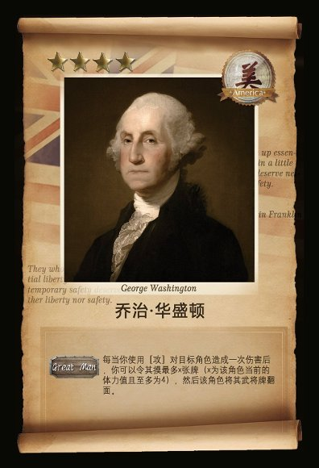
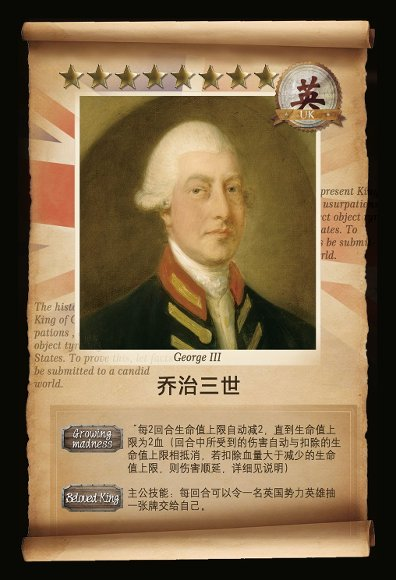
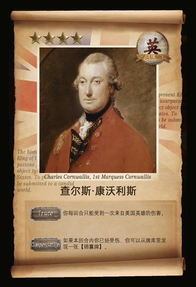
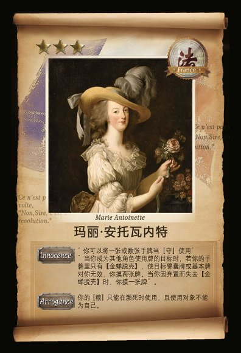
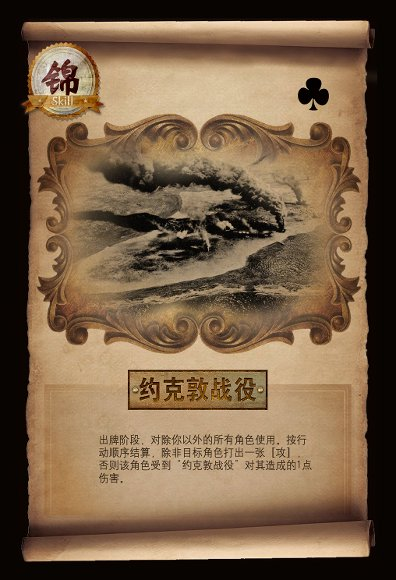
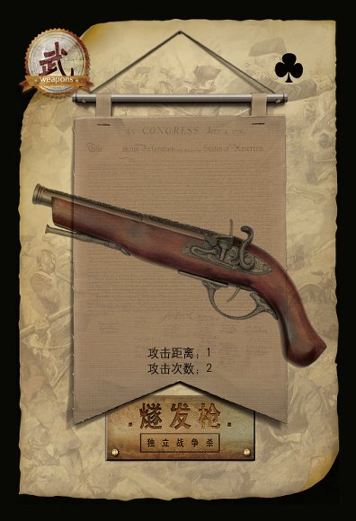

1. Selected Cards: Translating History into Mechanics
Curated cards illustrating how diplomatic alliances, military roles, and 18th-century armaments were transformed into gameplay mechanics. Click any card to inspect full artwork and text.






2. Quantitative Simulation & Game Balance
Findings from 10,000 automated Python Monte Carlo trials modeling turn flow, weapon ranges, hidden roles, and card utility.
Initial 4-Player Simulation (10,000 Trials)
Enemy → Rebel. The General team enjoyed overwhelming early-game tempo because enemy players bore the brunt of hidden-role targeting. This empirical finding informed key rule adjustments: increasing defensive utility cards (粮, 守), reweighting covert alliance victory conditions, and smoothing the action curve for minority factions.
3. Critical Reflection: Lossy Compression
Excerpt from personal design essay on the tension between historical complexity and systemic simplification.
“When I designed a card game about the American Revolution, I thought the difficult part would be balancing the game. Instead, I became stuck on a much stranger problem: how do I turn a real person into a rule?
For an event like the Boston Massacre, a card needs to produce a clear effect. Someone gains an advantage, someone loses one, and the game continues. But the real event did not happen that neatly. The five people who died had different lives, reasons for being there, and experiences that could not fit into one line of game text. The better I made the rule, the more I noticed what the rule had removed.
I started thinking of this as putting knowledge ‘into water.’ A historical narrative, a theory, or a model can look complete when it stays on paper. Once I put it into another situation—a game, a conversation, or something I actually experience—it starts to leak. The gaps become easier to see.
This is also why I have become interested in the idea of lossy compression. We compress complicated things all the time because we have to. A game compresses history into mechanics. Statistics compress experience into numbers... Data does not settle history, but I can use it to locate patterns and absences—then return to the archive to find what the numbers cannot explain.”